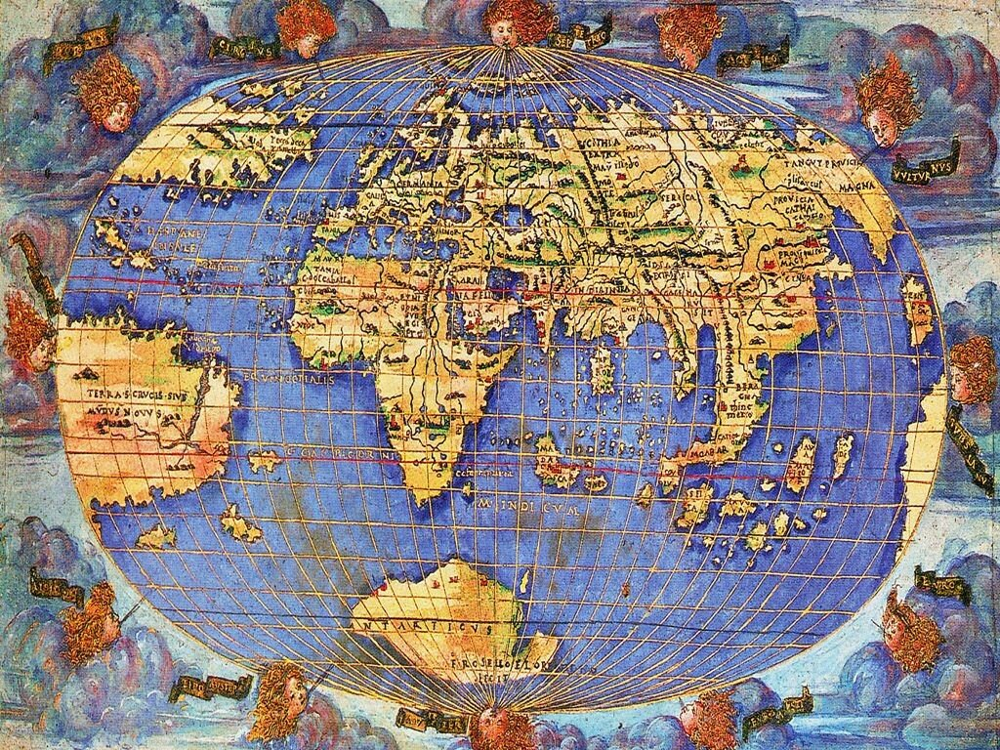
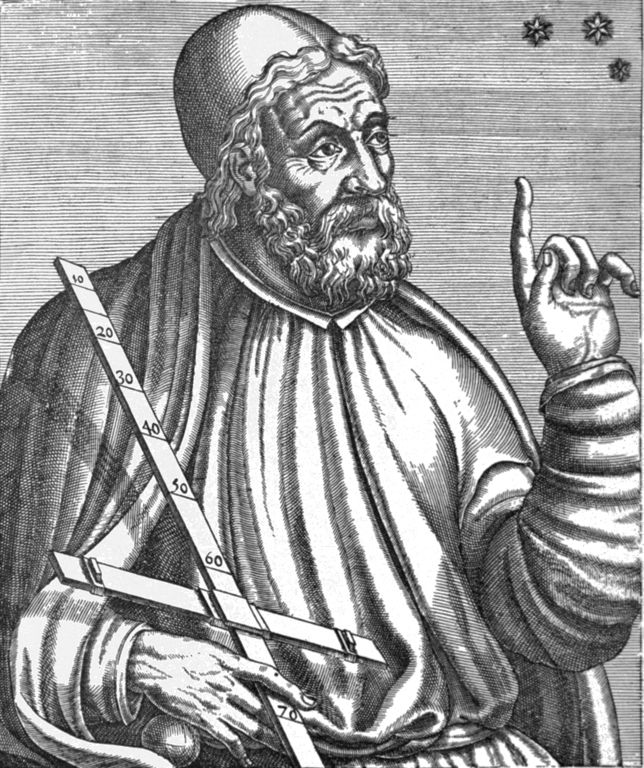
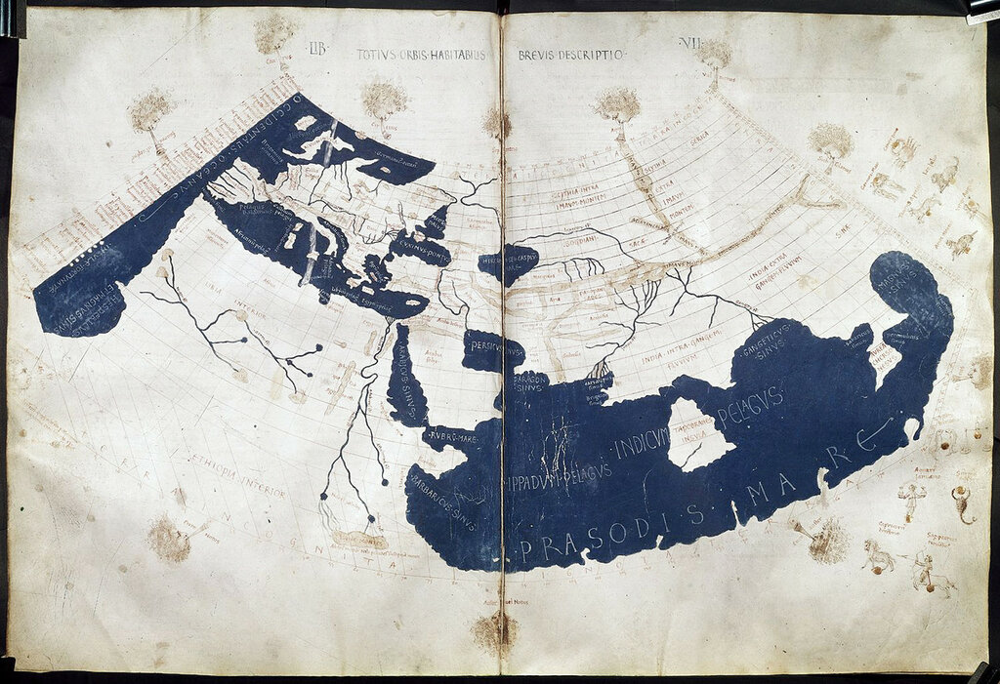
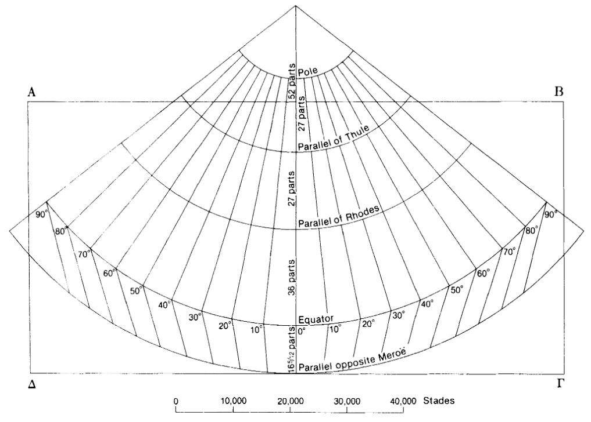
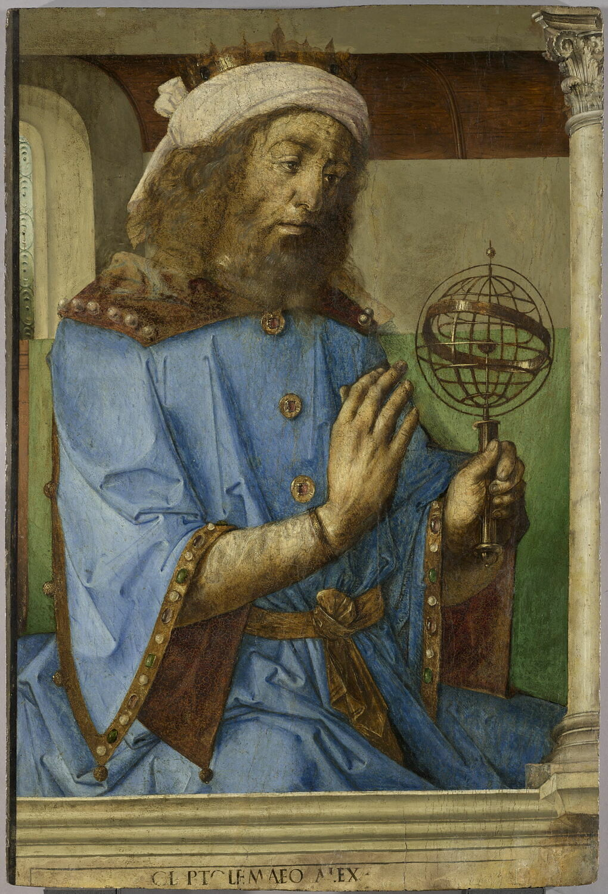
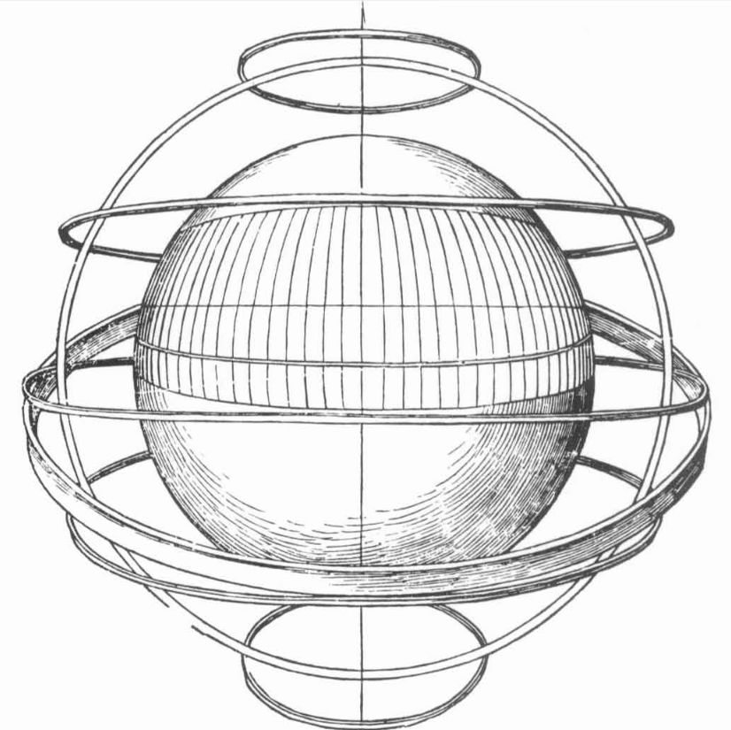
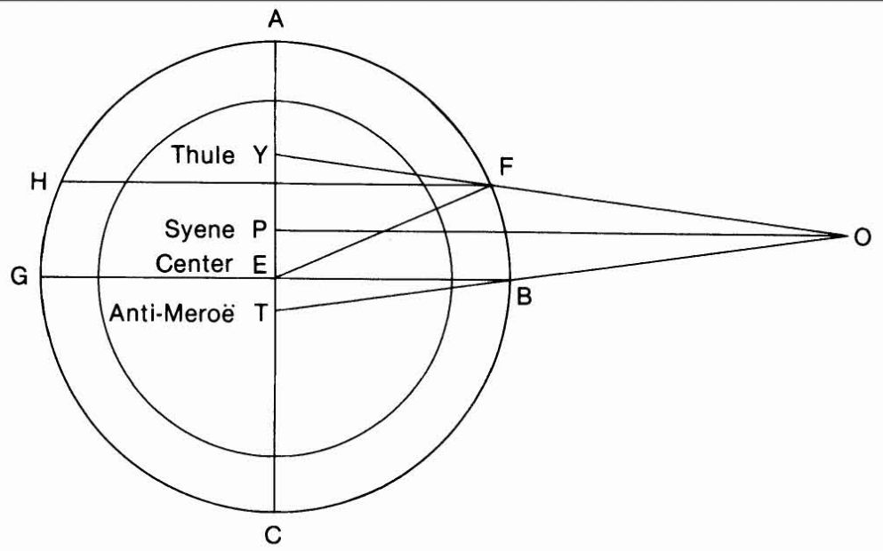

Можно понять предубеждение европейских моряков XVI века против использования карт. До изобретения меркаторской проекции для морской навигации использовались плоские карты, которые приводили к большим, иногда роковым ошибкам. Удобные для небольших участков акватории, при большом плавании плоские карты не отвечали запросам моряков. На плоских картах меридианы изображены прямыми линиями, параллельными между собой. Параллели также прямые линии, перпендикулярные меридианам. Градусы широты равны между собою. Градусы долготы также равны между собой и градусу на экваторе, если экватор включен в карту. Эта характерная особенность плоских карт нашла отражение в названии этих карт у португальцев, которые были первыми, кто ввел их в практический оборот: “carta plana quadrada”.
Первые печатные карты появились в 1477 году, в Болонье. К 1485 г. оттиски карт стали делать в Венеции, сначала с деревянных досок, а затем, с 1508 г. – с медных пластин, рисунки на которые наносил Франческо Росселли.

Первое изображение Антарктики на карте мира, 1508 год, Флоренция. Автор – Франческо Росселли.
До этого европейские мореплаватели пользовались, как мы уже говорили, рукописными картами. И несомненно выдающееся место среди них занимают карты-портоланы. Их появление было событием не только в истории картографии, но в истории цивилизации вообще. Некоторые удивительные свойства портолан-карт не могут объяснить до сих пор. В первую очередь это касается тайны появления самих карт и необыкновенной их точности. Начертания берегов на этих картах не поменяли своего положения вплоть до восемнадцатого столетия. Начиная с самых первых образцов портолан-карт, а появились они, как мы помним, в самом конце XIII века, Средиземноморье на них изображалось почти точно так, как и в годы расцвета европейской картографии. Не найдено до сих пор предшественников этих карт, которые отличались бы такой же точностью. Да и вообще птолемеевы карты, которые по времени вроде бы должны предшествовать портолан-картам, в Европе начали широко циркулировать только в XV веке, когда портолан-карты уже получили там широкое распространение.
Конечно, можно было бы начать наш рассказ с портолан-карт, как более совершенных, но что-то мне подсказывает, что не все читатели моего журнала близко знакомы с особенностями птолемеевых и других античных карт, на которые нам придется в дальнейшем ссылаться, поэтому краткий обзор картографии того периода не будет лишним. А к портолан-картам вернемся в следующем рассказе.

Клавдий Птолемей из Les vrais pourtraits et vies des hommes illustres grecz, latins,... Париж, 1584
Клавдий Птолемей, греческий мыслитель, работавший в рамках римских институтов (он жил в Египетской Александрии в эпоху позднего эллинизма, даты его рождения (100 г.) и смерти (170 г.) очень приблизительны) выполнил, как следует из его «Географического руководства», или просто «Географии», 27 карт земной поверхности, ни одна из которых не дошла до нашего времени. И вообще, ни одного манускрипта по этой теме, датированного ранее XII века, до сих пор не обнаружено. То, что мы о них знаем, почерпнуто из более поздних описаний.

Карта мира, основанная на первом латинском переводе «Географии» Птолемея (Jacobus Angelus , 1406). Флоренция, ок. 1450–1475. (Harleian MS 7182, ff 58–59)
В основу астрономии и географии Птолемея положены два фундаментальных факта: небо представляет собой вращающуюся сферу, шарообразная неподвижная Земля находится в центре этой сферы. Несмотря на то, что в ту эпоху уже имелись утверждения некоторых ученых о том, что Земля вращается вокруг своей оси, Птолемей категорически отвергал такую гипотезу.
Важнейшим достижением «Географии» Птолемея является введение сетки координат как единственного и универсального способа указания положения географических объектов. Понятия «широта» и «долгота» существовали и до Птолемея, причем эти понятия, как видно из их названия, отражали представление о размерах населенного мира – Ойкумены: его длина с запада на восток значительно превышала его ширину с севера на юг. Однако только Птолемей явно сказал о том, что эти два понятия должны использоваться вместе. Чтобы найти положение на карте определенного объекта достаточно знать о нем две вещи: широту и долготу. Значит, оба эти числа следует помещать в одном месте. У предшественника Птолемея Марина Тирского эти две координаты ни разу не встречаются рядом: широты он приводил там, где речь шла о параллелях, а долготы в другой части текста.
У Птолемея и его предшественников существовало несколько терминов, соответствующих нынешнему понятию «широта»: Помимо собственно широты (πλάτος) это были параллель (παράλληλος), высота полюса (ἐξάρματα τοῦ πόλου), и, наконец, климат (κλίμα).
Не буду тратить время на разъяснение таких понятий, как широта и параллель. С высотой полюса мы познакомимся ближе, когда обратимся к небесной навигации. С параллелью тоже все ясно: первоначально термин «параллель» не содержал в себе указания на измеримый характер широты, а имел абстрактный геометрический характер: так назывался круг, параллельный экватору, проходящий через любой произвольно выбранный пункт. А вот о климате подробнее поговорим сейчас. Не о климате как многолетнем режиме погоды, а о климате как одном из синонимов географической широты.
Греческий термин κλίμα (klima), мн. число κλίματα (klimata), происходит от глагола κλινω (klino), который переводится как «наклон». Значение этого термина можно определить так: наблюдаемый в данной местности угол наклона небесной сферы , который можно точно выразить в числах, а также географическая широта, которую характеризует этот угол. Помимо широты термин klima мог обозначать сторону света, регион мира, даже, как это было в Византийской империи, административную единицу.
Для обозначения одного и того же понятия – местности лежащей на данной широте – в зависимости от контекста использовались два термина: климат, для того чтобы подчеркнуть измеримый характер этой широты, и параллель, чтобы связать данную местность с координатной сеткой. Из содержания работ Птолемея можно сделать заключение, что климат, κλίμα, в своем узком значении - это угол, который характеризует данную параллель.
Но как выразить величину климата, если в европейскую картографическую практику еще не были введены деление окружности на 360° и основанная на нем сетка координат? Существующие методы позволяли сделать это измерением соотношения между длинами гномона и отбрасываемой им тени в день равноденствия или измеряя максимальную (М) или минимальную (m) продолжительности дня (или ночи) в дни солнцестояния, или их соотношение (М:m). Первый способ отличается большой простотой и наглядность., зато второй позволял построить единую шкалу для оценки широт любых местностей. Таким образом, климат – это выражение географической широты как функции от продолжительности максимального дня на этой широте.
Жесткая привязка климата к функции от отношения М:m приводится в системе семи климатов Птолемея и в системе семи «астрологических» климатов, которые использовались для расчета продолжительности жизни. Вместе с тем, Птолемей в дальнейшем отказывается от системы климатов и впервые делает сетку координат единственным и универсальным способом записи географических сведений. Это является важнейшим новшеством Птолемея, отличающим его географию от работ предшественников.
Но пояснением способа фиксации места на поверхности земного шара работа над созданием карт не ограничивается. Следует еще найти оптимальный способ проекции шарообразной поверхности Земли на плоский лист карты. И здесь вклад Птолемея в картографию также непререкаем.
Каждый из двух вышеуказанных способов черчения карты имеет свои особенности. Если чертить карту на сферической поверхности, то сходство с формой земли получается само собой, для этого не нужно никаких ухищрений. Однако при этом способе возможный размер карты не позволяет отразить многое из того, что должно быть обязательно на ней помещено. Кроме того, этот способ не позволяет окинуть взглядом сразу все очертания, и для того, чтобы осмотреть все подряд, нужно что-нибудь одно перемещать около другого: либо глаза, либо сферу. Если же изобразить карту на плоскости, все это совершенно отпадает, но нужно найти какой-то метод установления соответствия со сферическим изображением, чтобы расстояния на сфере передать на плоской поверхности как можно более соответствующими действительности.
Клавдий Птолемей «РУКОВОДСТВО ПО ГЕОГРАФИИ» (Перевод В. В. Латышева)
В Географии Птолемей дает четыре системы проекций:
1. Проекция, при которой параллели и меридианы представляют собой прямые линии, перпендикулярные друг другу (как у Марина Тирского). Масштаб вдоль параллели Родоса (центральной параллели населенного мира, по Марину, 36° сев. широты) и вдоль всех меридианов – один и тот же. Эту проекцию Птолемей, слегка изменив соотношение между масштабами, использовал для некоторых своих региональных и провинциальных карт, которые были приложены к тексту Географии. Однако Птолемей отверг возможность использовать эту проекцию для карт, охватывающих весь обитаемый мир.
2. Проекция с прямыми сходящимися меридианами и дугообразными параллелями. Ее еще называют Первая проекция Птолемея.

Первая проекция Птолемея. ΑΒΓΔ – границы населенного мира (Ойкумены)
В этой проекции меридианы проведены из некоторого центра (который не совпадает с Северным полюсом и лежит вне пределов Ойкумены), а параллели – это дуги окружностей, проведенных из того же центра. Ее преимущество по сравнению с проекцией Марина – не только постоянный масштаб вдоль центральной параллели Родоса и меридианов, как это имеет место и у Марина, но и правильное соотношение между длинами параллели Туле (63° сев. широты) и экватора. И хотя для других параллелей это отношение не соблюдалось, и действительности соответствовали только длины всех меридианов и двух параллелей (Родоса и экватора), правильные масштабы для широты Родоса обеспечивали приемлемую точность для большинства мореходных маршрутов на Средиземном море. Южнее экватора изображалась только одна параллель 16°25' южной широты, лежавшая симметрично относительно экватора к параллели древнего города Мероэ (Meroë) и по этой причине названная Анти-Мероэ; она считалась южной границей Ойкумены.
 Ссылка на оригинал
Ссылка на оригиналМероэ на литографии 1850 года
Но при всех преимуществах первой проекции Птолемея по сравнению с работой Марина, она все же имела существенные недостатки. Во-первых, меридианы имели излом на экваторе. И во-вторых, отрезки параллелей в промежутке между широтой Туле и экватором не соответствовали их длине на земной сфере. Чтобы устранить эти недостатки Птолемей разработал свою Вторую проекцию.
3. Проекция с дугообразными сходящимися меридианами и дугообразными параллелями.
 Ссылка на оригинал
Ссылка на оригиналВторая проекция Птолемея.
Центральной параллелью этой проекции была параллель Асуана (Syene) 23°50' сев. широты, которая находилась примерно посредине между параллелями Туле и Анти-Мероэ. Центр, из которого проведены дуги параллелей, находился за пределами Ойкумены. Меридианы представляли собой дугообразные кривые, проведенный через 5° (на нашем чертеже число меридианов сокращено вдвое). Однако Вторая проекция Птолемея, будучи более точной с теоретической точки зрения, представляла определенные трудности в практическом плане.
4. Особая проекция, представляющая собой вид земного глобуса со стороны удаленного наблюдателя.

Птолемей с армиллярной сферой. Joos van Ghent и Pedro Berruguete, 1476, Лувр, Париж

Третья проекция Птолемея с точки зрения наблюдателя. Армиллярные кольца, включая эклиптику, расположены таким образом, чтобы не мешать наблюдателю смотреть на проекцию.

Процесс создания третьей проекциия Птолемея. О – положение наблюдателя. Е – центр глобуса. ABCG – армиллярное кольцо.
Данная проекция использовалась Птолемеем и его последователями в многочисленных дискуссиях, однако имела ограниченное значение в картографической практике.
Продолжение последует.